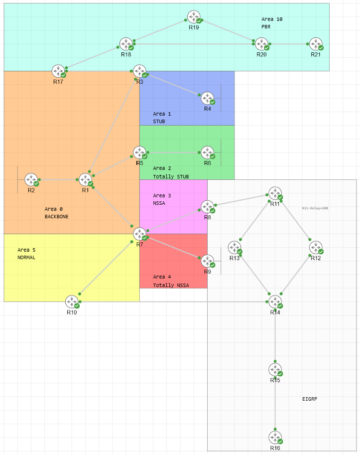
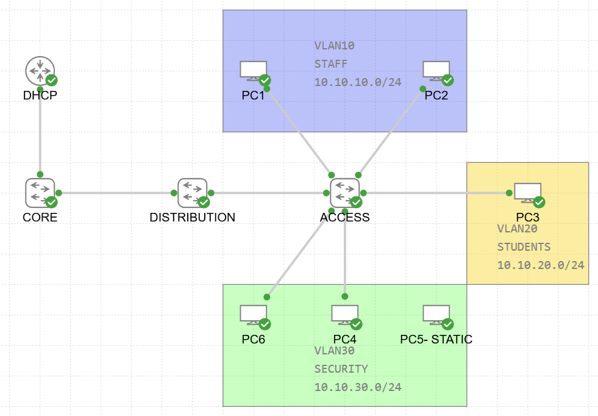
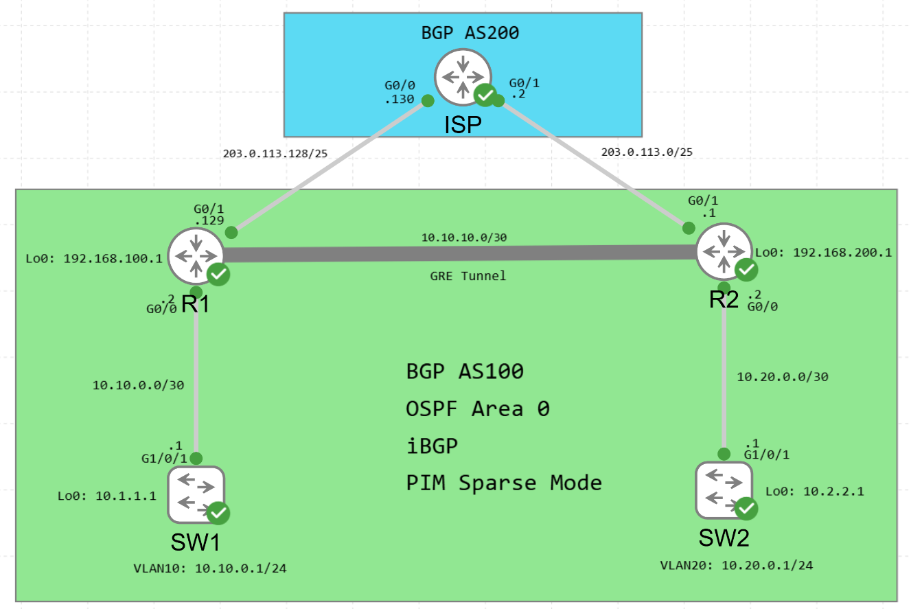

HOME LAB
Lab Topologies
CML-based labs built for ENCOR/ENARSI study and production scenario practice. All topologies run on Cisco Modeling Labs with IOSv/IOSvL2 images.

21-router topology covering all OSPF area types (Stub, Totally Stub, NSSA, Totally NSSA, Normal), EIGRP named mode with UCMP and mixed authentication (MD5/HMAC-SHA-256 with key rotation), mutual OSPF/EIGRP redistribution at two points with route tagging for loop prevention, and policy-based routing.
eBGP and iBGP topology covering path selection attributes (weight, local-pref, MED, AS-path), route reflectors, confederations, communities, AS-path prepending, and prefix aggregation with suppress-map.
Based on a production implementation — dual ISP links serving two buildings, OSPF redistribution with route maps and prefix lists to prefer one provider, and IP SLA object tracking for automatic failover when the primary ISP goes down.

Layer 2 security lab covering DHCP snooping with trusted/untrusted port enforcement, dynamic ARP inspection with ARP ACLs, and IP source guard to prevent rogue DHCP servers and ARP spoofing attacks.

GRE tunnel configuration between sites with multicast traffic forwarded over the tunnel — covers PIM sparse mode, RP configuration, and multicast routing across a GRE overlay network.
TACACS+ authentication and authorization with local fallback, privilege level configuration, command authorization per group, and accounting — modeled after production Cisco ISE/TACACS+ deployment.